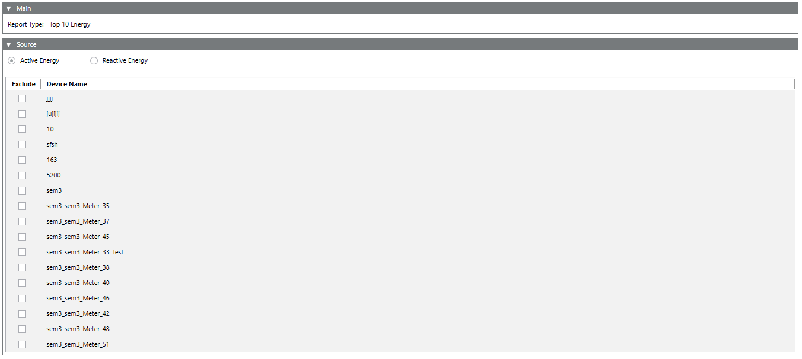

Configure the Top 10 Energy Report
- You have selected the Top 10 Energy report type for configuration.
- The Report Definition configuration page displays.
- From the Source expander select either Active Energy or Reactive Energy to display the respective value for the top 10 devices.
NOTE: You can drag the device to the Source expander to add a device as an alternative procedure. 
- Select the Exclude check box adjacent to the device names to exclude it during the report generation.
NOTE: All physical devices in the system are displayed in the exclude list and by default none of the devices is checked. At least one device in the exclude list should not be selected.
Logical devices are not considered for the top 10 value consumption. - Click Save
 .
. - The Save Object As dialog box displays.
- Enter a name and description and click OK.
- The Top 10 Energy report definition is configured.